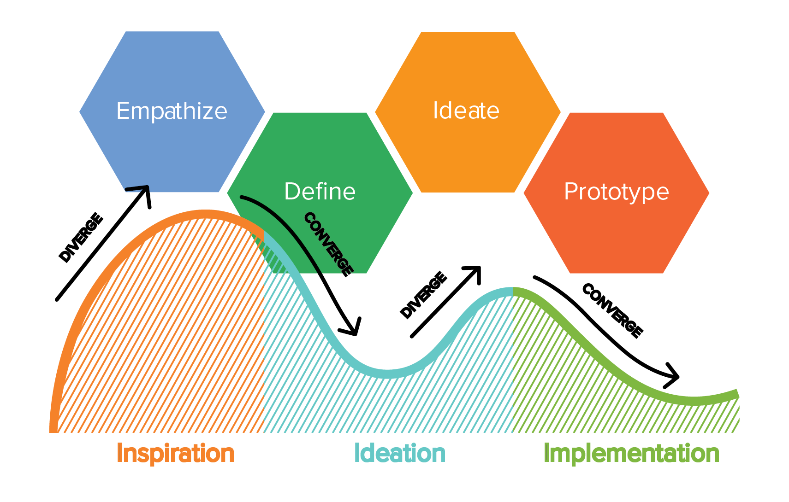
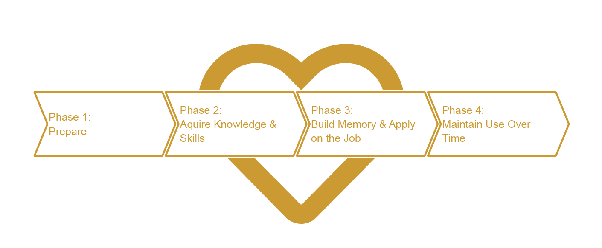

Design Document¶
CAEPA - Ambassador Leaders
Team CAEPA-BLE
UC Denver, INTE 5100: Learning Experience Design
Jason Kilpatrick
Kat Maret
Submitted: December 6, 2020
Project Overview¶
The Colorado Adult Education Professional Association, CAEPA, provides leadership to the field of adult education and family literacy by offering opportunities for professional development, advocacy, and resource sharing to improve the quality of life for every Coloradan (Colorado Adult Education Professional Association, n.d., Mission Statement).
The Colorado Adult Education Professional Association (CAEPA) is an organization whose purpose is to support Adult Education programs within Colorado. It serves a diverse group of adult education programs such as community colleges, literacy programs, community initiatives, correctional programs, and nonprofits. CAEPA serves these programs through professional development, providing and sharing instructional resources, and advocacy for adult education.
CAEPA is facing many obstacles in the way of Colorado’s Adult Education. Some identified obstacles include: Adult Education programs suffer due to under-funding and resources, educators not being equipped with the skills of standards-based instruction, as well as, online/hybrid instructional and engagement strategies.
The purpose of this design document is to create and develop a Colorado Ambassador Leaders program. The Colorado Ambassador Leaders program will provide professional learning around instructional strategies and foster professional learning communities. Additionally, the program will develop teacher and student ambassadors for Adult Education advocacy. The Ambassador Leaders program will serve as a stepping stone for the sustainability and growth of Adult Education programs in Colorado.
Background¶
- As of this year, over half of Colorado’s Adult Education programs have been defunded (federal at a state decision) leaving over 4,500 Coloradans who had programs, without a program.
- Colorado has identified 321,000 Adults lacking basic skills to advance in the workplace, and 126,000 Adults lacking basic English skills to advance (Coalition on Adult Basic Education, 2020a).
- All in Federal and State, an adult learner is supported by $838 compared to $10,000 in elementary education (Coalition on Adult Basic Education, 2020a).
Funding¶
In 2014, Colorado was the last state in the union to receive state funding and has one of the lowest state contributions of one-million dollars (Wilson, 2014).
Colorado Adult Education is funded through two-streams of grant funding. One at the Federal level is called Adult Education and Family Literacy Act (AEFLA) — which lasts for 4-years.
The other is State funding called, Adult Education and Literacy Act (AELA) — which lasts for 3-years. Both grants are distributed through the Department of Education, Office of Adult Education Initiatives.
Colorado Senate Bill (SB20-009, 2020) was successfully advocated for in 2014 and again in 2020. The 2014 passage marked the year that Colorado began funding Adult Education. The following revision was signed into law on July 8, 2020, and provides an expansion of service providers and at the same funding level.
Student Ambassadors¶
CAEPA is witnessing a decline in their Professional Development attendance and low involvement in advocacy campaigns, including Student Ambassadors.
CAEPA has participated in the Coalition on Adult Basic Education Student Ambassador campaigns for about 2 years (Coalition on Adult Basic Education, 2020b) and has had little buy-in from the field. COABE has recently hired a part-time coordinator for its Student Ambassador program. However, their focus is on recruitment and preparation for civic engagement with elected officials. COABE does prepare all talking points at the Federal level and provides advocacy materials. They recently released an app that connects participants by regional areas.
Professional Learning¶
The Colorado State Office of Adult Education Initiatives (AEI) has provided little professional development to the field. The Office of Career, Technical, and Adult Education (OCTAE) who administers the Federal funds has issued the Department of Education a Corrective Action Plan (Appendix B). In the plan, they made several recommendations for AEI, noting their lack of leadership and lack of professional development for the field.
In recent years, CAEPA has fulfilled the majority of the states required professional development, AEI noted this in their required FY Narrative Reports to OCTAE (National Reporting System, n.d.). Since the pandemic, AEI has provided links to distance learning platforms, however, this came around June/July of 2020 and was in conjunction with the office of K-12 (Colorado Department of Education, n.d.). They provided no guidance, limited training, and provided no practices to support educators during this time of transition.
As an example of poor guidance, AEI suggested proctoring the federally mandated standardized test to adult learners in their cars in empty parking lots, rather than provide training to implement online testing. However, AEI does have an online platform that has a Q&A forum with resources, and last checked is poorly maintained.
To support Colorado’s Adult Education professional development needs, CAEPA hosts an annual PD Conference every October. Over the years a decline in attendance has been tracked (Table 1).
Table 1: Conferences (Appendix A)
| Year | 2016 | 2017 (2018) | 2018 | 2019 |
|---|---|---|---|---|
| Registered | 258 | 159 | 176 | 98 |
Summary of Analysis¶
The learners we are targeting for this project are those who serve as adult educators. CAEPA describes those they serve as “adult education and family literacy programs from across Colorado that are diverse in nature: local community and faith-based organizations, community colleges, school districts, corrections facilities, workforce districts and libraries” (Colorado Adult Education Professional Association, n.d.). With so many diverse contexts being represented, the experience levels of adult educators greatly vary.
To assess problems and gaps across our wide spectrum of learners, we conducted several needs assessments, including, two-personal virtual interviews and a broad survey distributed to the adult education field at large. We also meet with stakeholders virtually, including, CAEPA Board of Directors and one of their affiliates, Literacy Coalition of Colorado — representatives present, from the Literacy Coalition, included District Libraries and volunteer teacher coordinator.
After conducting the multiple needs assessments, we analyzed each data group and the data as a whole. During the analysis, we discovered the entire field of Adult Education had similar problems and gaps; however, there was no singular emphasis of common need. We were able to organize these emerging patterns into six broad groups of problems and gaps (Appendix C). When identifying possible solutions, we were able to filter these groups down to three interconnected needs to address (Proposed Learning Solution).
Virtual Interviews¶
We utilized methods found in Kouprie, M., & Visser, F. S. (2009). A framework for empathy in design, as a base for developing Learner Personas (Appendix D, Appendix E). These were created to aid in better understanding the needs of our learners. Both learning personas represent distinct stakeholders in the Ambassador Leaders program. These learner personas allowed us as instructional designers to discover our learners, immerse ourselves in their reality, connect to their reality, and detach to use our new knowledge for instruction development.
Summary of Learner Persona 1¶
Kelly is an example of a target learner in the formal adult education field. She has thirteen years of experience in adult education administration roles. Those thirteen years have been in various contexts such as government, non-profits, and higher education.
In a previous role in Arizona, Kelly had prior experiences with the national Student Ambassador program. She values how it promotes awareness of Adult Education within the community, gives a personal face to the work, and advocates for increased funding for Adult Education. Kelly desires programs like Student Ambassadors to become more prevalent in Colorado. She believes that more professional development and the creation of a learning community for facilitators.
Kelly’s perspective helped guide our decisions on the design plan. Her positive reactions to the National Student Ambassador program and desire to see it more prevalent in Colorado assured us that developing an Ambassador Leaders program would be well received. Kelly does not individually have the knowledge to create a curriculum to implement an advocacy program. This allows for our learning solution to include curriculum and professional learning to facilitate an advocacy program. She also does not have the knowledge of other adult educators in Colorado desiring to implement a Student Ambassador program. Kelly needs an in-person or online forum to connect and collaborate with other facilitators as a professional learning community.
Summary of Learner Persona 2¶
Nadine holds an Elementary education teaching license (K-6) and currently is employed with the Colorado Department of Corrections (CDOC) where she has spent 5 years instructing adult education classes. Nadine’s prior experience includes 3 years of teaching adult education for non-profit organizations and has 2 years of experience in elementary education.
Nadine has a personal desire to learn to use modern web applications and to improve their instructional abilities through improved lesson design. As the CDOC is placing more emphasis on standards-based instruction, as well as career and technical education, these changes also become a learning opportunity for Nadine. She expressed this transition has added pressure and receives little support internally.
When designing the solution, we considered how we could support both of Nadine’s desires, professional learning in instructional skills, and a supportive professional community. We also considered Nadine’s limiting environment, CDOC, for a Student Ambassador program. With these considerations, the emphasis would need to be placed on professional learning that included professional support from their peers, with less focus on student ambassadors.
Adult Educator Survey¶
We also surveyed the field of adult educators in Colorado connected to CAEPA (Appendix F). We inquired about the field’s workplace, familiarity with adult education associations, as well as their familiarity with Student Ambassador, and interest in participating. We also asked the field of their highest training needs personally and within their program. The following are major takeaways from the Adult Education Survey:
Background¶
- The median experience level of respondents is 11.5 years with workplace contexts including community colleges, corrections, nonprofits, and other (publisher, self-employed, library services, community services).
- Roughly two-thirds of respondents are adult education instructors. The remaining one-third identified as instructional trainers and program directors.
- It’s evenly split by thirds, where respondents are currently working: in-person, hybrid, or remote/online. The majority are using online learning in some capacity.
Adult Education Associations¶
- Respondents are more familiar with their State (CAEPA) and National (COABE) Association than their Regional (MPAEA) Association.
Student Ambassadors¶
- Familiarity with the National Student Ambassador program is generally low. Almost half of the respondents are not interested in more information on the program. A quarter of respondents were unsure if they wanted more information.
- This shows an overall negative response to the National Student Ambassador program. The overwhelmingly negative reaction towards the program led us to consider a name change for our program.
- The following question asked about professional development needs for Student Ambassadors and the respondents’ reflect the previously seen interest level. However, the need for structure and support is consistently expressed.
Professional Learning¶
- When asked about their personal professional learning needs, respondents’ expressed a desire for a large variety of professional development topics but the common theme surrounded effective remote learning. This will guide the content of microlearning experiences to have a focus on remote learning strategies. This will guide the content of microlearning experiences to have a focus on remote learning strategies.
- When asked about professional learning for their program, respondents’ needs mirror the need for remote learning but added a clear need for learner community development. A portion of the microlearning experience will be collaborative in nature. It will connect adult educators and not only provide learning, but also a community.
Additional Stakeholders¶
Internal and external stakeholders had valuable input regarding the value of Ambassador Leaders to the learners and how the program could impact decision making at the Colorado Department of Education, Office of Adult Education.
After meeting with external stakeholders, the idea of tiered professional development came to mind. Their concern was with great diversity, comes diverse learning needs. This idea of tiered professional learning will benefit the programs in many ways. We see tiered training as a way to increase learner engagement by allowing learners to enter and build their skills over time, allowing for meaningful learning.
When designing the goal for the program, we wanted to instill a common thread for all professional learning. After meeting with the organization, we accepted their proposed change from “best practices” to “high impact practices”. This change places a degree of research and moves the training to student-centered.
Instructional Design Model¶
For this design solution, we are applying various design models, including:
- ADDIE
(Analysis, Design, Develop, Implement, Evaluate) - Design Thinking
(Empathize, Define, Ideate, Prototype, Test) - Human-Centered Design
(Inspiration, Ideation, Implementation)
However, we are utilizing the ADDIE model as our instructional design backbone, Analysis, Design, Develop, Implement, Evaluate. We chose the ADDIE model as it is a well-known and industry-recognized model. It was our hope, in keeping with the familiar, that we could help stakeholders better understand our departures into new models (eLearning Industry, 2020).
Early on, we felt our learning design needed to address the human element, as our identified gaps included learner detachment. To do so we incorporated Design Thinking with the mindset of Human-Centered Design (HCD).
Design thinking is a 5-step process that would overlay Human-Centered design thinking. Human-Centered Design utilizes two modes of thinking, convergent and divergent. When designing a learning experience, both modes of thinking place the learner at the center. Convergent thinking is logical and seeks to answer questions. While divergent thinking seeks to create ideas by asking new questions. By combining Design Thinking — which places the learner at the center of the design process — and Human-Centered Design, we ended up with the model shown in Figure 1: Using Human-Centered Design with Design Thinking (MovingWorlds, 2018).
To break down our design process, we will summarize our steps through the context of the ADDIE model. When additional instructional design models are used, we will note actions taken in each ADDIE phase. As additional instructional design models may not be one-to-one inline with ADDIE, best efforts will be taken to correlate their relationships.

Analysis¶
- Design Thinking: Empathize
(Learner Personas) - Design Thinking: Define
(Problems Gaps, Goals, Objectives) - HCD: Inspiration
(Interviews, Survey)
As we entered the analysis phase, we needed to better understand our learners and their knowledge gaps; therefore, we expanded ADDIE’s analysis phase to incorporate additional instructional design models to better connect with our learners. We conducted interviews, and surveyed the field of adult education, providing us with a human connection. Through utilizing Human-Centered Design techniques early on, we discovered problems and gaps that might have gone unnoticed.
One such example is the solution name itself, Student Ambassadors. While reviewing the survey results, it turns out over half of the adult educators have negative connotations with a program by that name. We also discovered the name to be a point of confusion during the interview process, since the solution design is targeting adult educators, not students. To correct this newly discovered problem, we adjusted the solution design name to Ambassador Leaders. The name is ambiguous to allow any participant to be recognized as a leader.
Developing learner personas illuminated the complexity and diversity of our learners. It also helped us to define the knowledge and skills gaps that our students need to have met.
Design¶
- Design Thinking: Define & Ideate
(Objectives, Assessment, Journey map) - HCD: Ideation
(Journey map)
During this iterative process, we reflected on our learning goal and our identified problems and learning gaps and proceeded to create learning objectives. During the same time, we also brought in a human element and started to structure a learning path through our proposed learning solution.
Considering the wide array of learning gaps and problems uncovered during our analysis, we attempted to design a solution that would be adaptable while meeting the organization’s initial needs. It was here that we expanded the ADDIE design phase to include Design Thinking. While using the Design Thinking model, we iterated between the Define and Ideate phase allowing us to create a fuller more robust solution, than what might have been possible. Mixing this with a Human-Centered Design mindset, we spent time considering the impacts of the solution for both the learner and the organization (Appendix G).
Based on the problems and learning gaps we identified in the Analysis phase, learning objectives were revised during the design phase to better align with the desired outcomes for the Ambassador Leaders program. During this revision, appropriate objective-aligned assessments were designed.
A primary outcome for the Ambassador Leaders program looks to support Colorado Adult Educators through building a professional learning community while also engaging the field in advocacy efforts. A challenge in the advocacy effort is the competing National Student Ambassadors program which was found to have negative connotations. We designed around this problem, through a name change, in the analysis phase and considered this important factor while planning the learners’ journey. Through an outreach campaign, we decided we could build learner awareness of the program goals and professional learning opportunities. We also realized outreach would support the need for transparency and reporting successes of an advocacy program desired by the field. We, therefore, placed it at multiple points in the program design creating a circular process, solving multiple needs through thoughtful communication with the field.
With low Adult Educator professional development opportunities available in Colorado, providing meaningful professional development was a natural next step. With the diversity of professional learning needs in the field, we had to design a flexible learning environment, which also respected the learner’s busy schedules. We thought of the idea of courses structured around microlearning experiences would best address this need. We then dove-tailed the courses with forums to build a professional learning community, a need consistently expressed by our learners. Therefore, the collaborative peer forum will be used to facilitate community and communication. Without a behavior change, professional learning makes no difference. Therefore, once the direct instruction and collaborative process have been completed, learners must go out into their contexts and implement their new knowledge and strategies.
Finally, the long-term successes of learners implementing their newly gained knowledge will be celebrated. This will be documented and used to spread awareness of the Ambassador Leader program and advocate for Colorado Adult Education, leading back to the initial need.
Develop¶
- Design Thinking: Ideate & Prototype
(Storyboard) - HCD: Ideation & Implementation
(Storyboard)
Within the development phase, we focused on a microlearning experience. We practiced the use of storyboarding and thought about the human element of how learners would progress through professional learning.
Development of the program microlearning experiences will be driven by the specific learning objectives created during the Design phase and tied initially to the professional learning identified in the Adult Educator Survey. We storyboarded a course exemplifying a leveled course structure building from a base idea to the program goal of implementing high-impact practices into instruction (Appendix H). This will be a format for course development.
As we have provided a high-level objective for professional learning, additional learning objectives will be embedded in the microlearning courses to inform the learning within the courses. The microlearning courses and community forums are the heart of the Ambassador Leaders program and are the intended professional learning opportunities and professional community that will be continuously developed.
Implement¶
The implementation phase will be when learners participate in the learning experience. We have detailed a Beta cycle for implementation and guidelines are outlined in the Schedule. Within the schedule have laid out milestones and mapped out a timeline to implement a beta program cycle. This could be considered a test run using a minimal viable project (MVP) for the first iteration.
Evaluate¶
- Blended New World Kirkpatrick Model
- Design Thinking: Define & Ideate
(Objectives, Assessment, Journey map) - HCD: Ideation
(Journey map)
During the iterative process of the design phase, we considered the high-level learning objectives for the Ambassador Leaders program, we also considered the assessment and evaluation for each phase. We have aligned the assessments to the New World Kirkpatrick Model (NWKM) in a blended assessment form. A blended model consists of multiple assessment strategies used to reach any one level of NWKM. The evaluation process was designed thinking about how each phase is a stepping stone to the next phase of learning, to lead the learner through the program.
Evaluation data will be analyzed and used to refine the Ambassador Leader program. In analyzing the evaluation data, NWKM Level 1 will lead to Level 4. We have provided an evaluation schedule and plan for communication (Evaluation Plan).
Proposed Learning Solution¶
While considering the organization’s initial needs and mission and after conducting a broad analysis of the intended learners, we are proposing a robust learning solution to meet the needs of the organization and the learners they support. The solution will be a program called Ambassador Leaders and will address three overarching learning needs in Colorado Adult Education.
- Development and support of Teacher & Student Ambassadors
- Offering professional learning for Colorado Adult Educators
- Fostering a supportive professional community
The solution will be a comprehensive program leading the learners through four-phases of learning, each phase contains one- or two-objectives. Professional learning and community are the heart of the solution and are designed to be highly flexible and expandable over time to meet the changing needs of adult education (Figure 2: Ambassador Leaders).
To best explain the learning solution, we will summarize the journey detailing the organization’s involvement and the learners’ journey (Appendix G).

Phase 1: Prepare¶
During the first phase, the organization will be defining the program and explaining the opportunities contained within. This will be a marketing campaign aimed at recruiting participants and explaining the offerings that will be available during the next phase. Emphasis will be placed on (re) branding Ambassador Leaders — a program designed to support adult education through advocacy, professional learning, and a supportive network (Appendix I). This will be an ongoing campaign, with new announcements released as new content becomes available, always reaffirming the goal of the program.
From the learners’ perspective, they will discover the vision of the program and will connect to the familiar aspect of professional learning the organization is known to provide, generating enthusiasm. Additionally, the learner will also build an understanding of the inherent advocacy aspect. The learner will be able to distinguish how Ambassador Leaders is in juxtaposition to the larger national Student Ambassador model. The dropping of the adjective “student” is intentional. By labeling all participants as “Ambassadors” the program will empower adult educators and will include programs and by proxy, student voices too. The broader definition of Ambassador Leaders will create a larger more sustainable community of advocates representing the diversity in Colorado Adult Education.
The conclusion of this phase will be when the learners register for the program. The primary goal of this phase is to inform the participants of the program’s advocacy effort and professional learning available.
Phase 2: Acquire Knowledge and Skills¶
This phase is the heart of the program and can be imagined as a series of microlearning courses, offering synchronous and asynchronous learning through a learning management system. Initially, the organization will be the primary content creators, building the library of professional learning available. Later, Industry experts including publishers and speakers will be sought out as content creators, as well as, contributors from the field and external stakeholders. The content will have a consistent build as there will be guidance provided as to the structure of each course.
Learning opportunities in this phase will have a subset of learning objectives to support the specific topic of instruction. Through the Adult Educator survey (Appendix F), immediate training needs have been identified — surrounding online instructional strategies — and will be prioritized in the Beta Release. All topics of instruction will incorporate the use of a high impact practice (Appendix H) to address the program goal. Basing the goal of the project on a flexible practice will string a common thread of learning throughout every offering in the Ambassador Leaders program while meeting the needs of the adult education field.
The learners will have ongoing access to the various contents within the platform. These skills and knowledge will be built around unique learning objectives and assessments for the microlearning course and will be accessible in the learning management system. Over time, each course will offer different levels of understanding similar to a course structure, 101, 201, 301, etc… By offering levels of content, or tiers, we are connecting to the learners’ intrinsic motivation by offering choice and meeting the learner where their skill level is at and honoring the diversity of the adult educators we serve – Adult Learning Theory.
Phase 3: Build Memory and Apply on the Job¶
Phase three of the solution intends to build a learner community and extend learning from the previous phase. This phase contains two-steps, one within the learning management system and the other externally in their workplace, respectively.
The first step will have the learners collaborate with other professionals within forums or in virtual breakout sessions. This will be a safe place to explore new ideas the learner picked up in the previous phase. Learner Persona 2 (Appendix 1) noted that their workplace environment is lacking in a supportive space to exchange and explore new instructional ideas, this step is designed to support this gap. Additionally, this space can provide discussions surrounding advocacy or other topics adult educators choose to start-up, informing future learning topics.
The second step will ask the learner to apply the new skills on the job, with an emphasis on trialing high impact practices. Learners will be able to fall back to the previous collaborative step to ask questions, seek guidance, or report successes.
From the organization perspective, the content creators will be fulfilling the role of moderators during the collaborative phase. Additionally, the organization will reach out to the learners to find out how things are going in their workplace. This will be a formative assessment and can be survey-based. The questions will be open-ended, with emphasis on reflection based answers, asking the learners about their experience in the Ambassador Leaders program this far and how they are applying the new information.
By providing learners a safe place to exchange ideas and asking for reflections about the impacts of new practices within their workplace, the Ambassador Leaders program will meet the learning objectives for this phase.
Phase 4: Maintain Use Over Time¶
To wrap up the program, we wanted to further connect the learners and outreach to new potential learners and content creators. This phase is about transparency, communication, and supporting the Ambassador Leaders program.
As part of the design, we wanted to recognize the work of Adult Educators. This could be considered a capstone project for the learners, representing a high impact practice. The organization will follow up with how the learner is applying the ideas gained through participating in Ambassador Leaders. This is in response to a critique we heard during our interview with Learner Persona 1 (Appendix D). They expressed a desire to know how other programs are implementing ambassador ideas, their struggles, and their successes. During this phase, the organization will conduct interviews – student, educator, or program – and release it to the public, thus restarting the program phases.
Instructional Objectives¶
Ambassador Leaders’ instructional objectives are at a high-level, measuring the effectiveness of each phase of the learners’ journey (Appendix G). We encompassed the learning solution using the full range of Bloom’s taxonomy, following the hierarchical order forming the pyramid through each phase of the program. As the learner begins their journey, they will form the base of the pyramid and progressively move up the pyramid through the completion of each phase. Bloom’s Taxonomy
While designing each phase, we considered assessments and the instructional strategy to be used. As noted by Khalil, M. K., & Elkhider, I. A. (2016) there are three primary learning theories, behaviorism, cognitivism, and constructionism. We have identified the learning theory applied — informing instructional strategies to be applied — and the method to connect instruction and assessment, through each of the phases.
As we have proposed a robust learning solution, additional learning objectives will be provided during Phase 2 & 3. These objectives will be tied to the individual microlearning lessons within the online courses and will be developed as courses are created. We have developed a course to demonstrate this (Appendix J).
Solution Design Goal¶
Through participation in Ambassador Leaders, Colorado adult educators will have reliably demonstrated the ability to use high impact practices and knowledge of advocacy strategies for the community, district, state, and national levels.
Phase 1: Prepare¶
These objectives are intended to be initially met through marketing materials and will take a behaviorist approach. Upon receipt of an announcement for professional learning, the new program will be outlined. When the learner engages and proceeds to register for the training, they will be asked retrieval based questions about new understandings about the Ambassador Leader program, as well as questions concerning types of professional learning they seek and details of their instructional contexts.
Objective 1.1¶
- Remembering (Knowledge): The learner will define what Ambassador Leaders are.
- Assessment: Multiple choice or short answer (retrieval based)
Objective 1.2¶
- Understanding (Comprehension): The learner will explain how the Ambassador Leaders model is an extension of the national adult education Student Ambassador model.
- Assessment: Compare and contrast short answer
Phase 2: Acquire Knowledge and Skills¶
These objectives will be met through the microlearning portion of the program’s professional development. Applying the cognitivist learning theory, new information will be explained, demonstrated, or illustrated with the intent that the learner is actively participating in the instruction. Content leveling, or tiers, will further support the acquisition of new knowledge and is framed by the cognitivist learning theory (Ertmer, P. A., & Newby, T. J., 2013). Assessments will be conducted within the microlearning courses, aligning to each course’s sub-objectives, and participant tracking will assess the program objective.
Objective 2.1¶
- Applying (Application): The learner will contribute to Ambassador Leaders through forums, training, and advocacy efforts.
- Assessment: Track learner engagement
Objective 2.1.1¶
- Microlearning course objectives
- Assessment will be embedded in the microlearning course
Phase 3: Build Memory and Apply on the Job¶
These objectives will be met through the collaborative exploration and application of the program’s microlearning courses. Applying the theory of constructivism, “Learners do not transfer knowledge from the external world into their memories; rather they build personal interpretations of the world based on individual experiences and interactions” (Ertmer, P. A., & Newby, T. J., 2013). This phase will encourage learners to incorporate new strategies in their practices while building a supportive professional community. Assessments for objective 3.1 and 3.2 will include reflections. Reflecting first, during peer collaboration, on their experience in Ambassador Leaders and their professional learning. Then again, learners will reflect on what has changed in their practices based on their experience in Ambassador Leaders.
Objective 3.1¶
- Analyzing (Analysis): The learner will correlate how Ambassador Leaders support Colorado’s adult education programs, educators, and students.
- Assessment: Formative reflection surveys and feedback opportunities
Objective 3.2¶
- Evaluating (Evaluation): The learner will select appropriate high impact practices that promote student’s skill-building, self-awareness, agency, and self-efficacy.
- Assessment: Summative reflection survey on practices before and after training.
Phase 4: Maintain Use Over Time¶
This objective will be met through the learners’ long-term application of their professional learning. Continuing with the constructivist theory, learning is “facilitated by involvement in authentic tasks anchored in meaningful contexts” (Ertmer, P. A., & Newby, T. J., 2013). A form of communication outreach will facilitate the assessment of this objective. It is intended to record successes in the field of Adult Education through various forms of media and publicly available — raising awareness and advocating.
Objective 4.1¶
- Creating (Synthesis): The learner will build safe and inclusive learning environments utilizing skills gained through Ambassador Leaders.
- Assessment: Document successes through media; i.e. interviews, program spotlights, student and educator interviews.
Solution Storyboard¶
The solution storyboard represents a learner’s experience through a microlearning course within the Ambassador Leaders program (Appendix J). In the solution storyboard, we have provided an overview of the heart of the program and created a course containing four microlearning modules. Two of the four are detailed lessons, while the remaining two are present to demonstrate the progression of learning.
Evaluation Plan¶
The purpose of evaluating the Ambassador Leaders program is to determine the effect its implementation has on Adult Educators’ instructional strategies and, ultimately, it’s resulting in advocacy. With Colorado-based adult education’s professional development lacking, the adult learners themselves are also suffering. The proposed Ambassador Leaders program will work towards rectifying this problem. This evaluation process will assess if the Ambassador Leaders program is meeting the high-level program outcomes of relevant professional development for adult educators and facilitate further development and refinement of the program.
Data collection and analysis plan¶
Data collected throughout the Ambassador Leaders program will be evaluated using the four levels of the New World Kirkpatrick Model (NWKM). Data will be collected through adult educator participation, learner self-reflection, post-learning feedback, and interviews. These results will be evaluated to improve the Ambassador Leaders program.
Formative learner evaluations will take place throughout each phase, informing the effectiveness of the program. In the final program phase, a summative assessment will take place, asking the learners to demonstrate how they are implementing the instructional strategies they have discovered through the program.
Evaluation schedule¶
Evaluation and revision will occur once each Ambassador Leaders cycle is completed. Once completed, the collected data will be evaluated and analyzed to determine needed revisions to the next Ambassador Leaders cycle.
New World Kirkpatrick Model¶
Developed in the 1950s, the Kirkpatrick Model has become an industry standard for program evaluation. As professional learning has evolved, so has the model. It was revised last in 2016, taking on the name New World Kirkpatrick Model (NWKM) (The New World Kirkpatrick Model, n.d.).
Level 4: Results¶
“The degree to which targeted outcomes occur as a result of the training and the support and accountability package” (The New World Kirkpatrick Model, n.d.).
In the NWKM, Level 4 evaluates how professional learning impacts the organization and helps meet its mission and the program goal. This level of evaluation will utilize aggregated data through phases 3 & 4 and aim to assess learning outcomes of objectives 3.1, 3.2, and 4.1.
- Mission statement: The Colorado Adult Education Professional Association, CAEPA, provides leadership to the field of adult education and family literacy by offering opportunities for professional development, advocacy, and resource sharing to improve the quality of life for every Coloradan (Colorado Adult Education Professional Association, n.d., Mission Statement).
- Ambassador Leaders goal: Through participation in Ambassador Leaders, Colorado adult educators will have reliably demonstrated the ability to use high impact practices and knowledge of advocacy strategies for the community, district, state, and national levels.
- Objective 3.1: The learner will correlate how Ambassador Leaders support Colorado’s adult education programs, educators, and students
- Objective 3.2: The learner will select appropriate high impact practices that promote student’s skill-building, self-awareness, agency, and self-efficacy.
- Objective 4.1: The learner will build safe and inclusive learning environments utilizing skills gained through Ambassador Leaders.
Level 3: Behavior¶
“The degree to which participants apply what they learned during training when they are back on the job”(The New World Kirkpatrick Model, n.d.).
A goal of the Ambassador Leaders professional development is for an instructional change.
At the end of phase 3, learners will reflect on their work practices before and after the course. This will provide evaluation data on how their behaviors were affected by this experience. This contributes to the evaluation objective 3.2.
During phase 4, a post-learning interview will be conducted. Learners are asked to share the changes they have implemented in their instruction based on their professional learning and share successes and struggles. This contributes to the evaluation objective 3.1 and 4.1
- Objective 3.1: The learner will correlate how Ambassador Leaders support Colorado’s adult education programs, educators, and students
- Objective 3.2: The learner will select appropriate high impact practices that promote student’s skill-building, self-awareness, agency, and self-efficacy.
- Objective 4.1: The learner will build safe and inclusive learning environments utilizing skills gained through Ambassador Leaders.
Level 2: Learning¶
“The degree to which participants acquire the intended knowledge, skills, attitude, confidence and commitment based on their participation in the training” (The New World Kirkpatrick Model, n.d.).
During phase 1, learners will gain knowledge about Ambassador Leaders and will be assessed through retrieval based questions during the registration process. This evaluates objectives 1.1 and 1.2.
During phase 2, learners will gain knowledge on advocacy, instructional strategies, and high-impact strategies and will be assessed through a self-reflection of newly gained information within the microlearning course. This evaluates objective 2.1.
During phase 3, learners will participate in a microlearning forum and be provided a learning reflection survey about the course, within the microlearning course. This contributes to the evaluation of objective 3.1.
- Objective 1.1: The learner will define what Ambassador Leaders are.
- Objective 1.2: The learner will explain how the Ambassador Leaders model is an extension of the national adult education Student Ambassador model.
- Objective 2.1: The learner will contribute to Ambassador Leaders through forums, training, and advocacy efforts.
- Objective 3.1: The learner will correlate how Ambassador Leaders support Colorado’s adult education programs, educators, and students
Level 1: Reaction¶
“The degree to which participants find the training favorable, engaging and relevant to their jobs” (The New World Kirkpatrick Model, n.d.).
During phase 1, reaction data will be collected through the results of enrollment and attendance of the Ambassador Leaders training. This will enable an analysis of the education context, experience, and personal learning goals of participants. This contributes to the evaluation of objective 2.1 and 3.1.
During phase 2, the learners’ reaction to the microlearning experience will also be gathered within the microlearning course. This data will help guide changes to future microlearning course opportunities. This contributes to the evaluation of objective 2.1.
During phase 3, learners will be provided a course feedback questionnaire within the microlearning course. This contributes to the evaluation of objective 3.1.
- Objective 2.1: The learner will contribute to Ambassador Leaders through forums, training, and advocacy efforts.
- Objective 3.1: The learner will correlate how Ambassador Leaders support Colorado’s adult education programs, educators, and students
Plan for revision cycle¶
Revision based on NWKM Level 1 data will be driven by the participation in Ambassador Leaders professional development opportunities. To determine low participation, we will compare the total who participated in an estimated total of adult educators, creating a ratio. Low participation will result in revision work of the CAEPA marketing and media campaign, as well as course content.
Revisions for NWKM Level 2 will be based on course feedback. Data will be collected at the end of the microlearning course. If the course is determined to be ineffective or if learners share their LMS experience was not ideal, the course content will be adjusted accordingly.
Revisions for NWKM Level 3 will be based on questionnaire feedback, forum participation, and learning application reflection. Based on results, adjustments will be made to course content, collaboration opportunities, and/or application opportunities.
Revisions at level NWKM Level 4 is a culmination of all underpinning levels of evaluation, meeting the overall program goals and objectives. If these are not being met, then further analysis of the previously collected data will take place to guide revision.
Plan for communication of results¶
Communication of evaluation results will be shared at the organization’s monthly board meeting. Raw data will be collected and shared a week in advance of the meeting so board members can review the data beforehand. Additional stakeholders may be invited to the meeting for additional input.
Assumptions¶
In several instances, we contacted the primary stakeholder, CAEPA, to confirm logistics before moving forward and surveyed the field. However, we still made assumptions concerning some factors.
Organization level¶
- The Ambassador Leaders program would be a training supporting only Adult Educators and did not provide support for Adult Learners.
- CAEPA would be able to create course content based on the needs of Adult Educators.
- CAEPA would be able to recruit influential leaders, industry experts, and adult education vendors to support module development and provide potential keynotes.
- CAEPA would invite additional stakeholders into monthly board meetings for external feedback on the program.
- CAEPA would fulfill moderation of forums and perform assessment interviews.
Learner level¶
- The learner will be willing to participate in post-learning interviews
- The learner will be able to implement new instructional strategies in their workspaces
- Learners will be active participants in the collaboration process and visit forums consecutively and in a timely manner
- If professional learning is available, adult educators will take advantage of the opportunity.
- Learners will have a device and a reliable internet connection
- Learners are willing to try new instructional strategies.
Schedule¶
For scheduling, we created a Beta Release timeline and designed program milestones. We then condensed this information into project milestones for a successful Beta Release. We also outlined a project timeline for the Beta Release, aligned to each phase of the program. Below you will find a list of project milestones followed by a project timeline surrounding the completion of each project phase.
Project Timeline¶
The dates listed are dates of completion and are suggested timeframes for completion of each phase of the Beta Release. Once the initial implementation is completed, the process will be iterated on, to improve future training.
- Design document completed
December 06, 2020 - Pre-release milestones
December 31, 2020 - Beta: Phase 1
January 31, 2021 - Beta: Phase 2
February 15, 2021 - Beta: Phase 3
February 15, 2021 - Beta: Phase 4
February 28, 2021
Project Milestones¶
We considered the project phases, steps, deliverables, and tasks to be completed, most outlined in our Journey Map (Appendix 1). After the completion of the design document, the pre-release milestones are to be completed before learners enter Phase 1 of the Beta Release.
Pre-release¶
- Create an online learning platform, including a system to allow adult educators to register for the Ambassador Leaders program with embedded assessment questions.
- Develop course content addressing high priority learning needs and place within the learning management system with correlating course forums.
- Develop course formative and summative assessments
- Develop and release marketing materials for the field of adult education.
- Develop guidance for external content contributors for Ambassador Learning, including external stakeholders.
- Celebrate Pre-Release Completion!
Beta Implementation¶
- Limited course offerings are available to the public and reflection surveys have been collected and reviewed for the next iteration.
- Invite external content creators to explore the platform and release content creation guidelines and invite submissions.
- Celebrate Beta Launch!
Beta Evaluation¶
- Gather submissions of external content and complete course creation.
- Release success stories from Beta series and open registration.
- Celebrate Beta Conclusion!
Iterate and Reset¶
- Analyze evaluation data
- Prioritize areas for iterations and adjust content/experience accordingly
Communication Plan¶
Communication will be open between CAEPA and the instructional designers. With milestone encapsulating deliverables and tasks, we, the designers, will be able to provide quick assistance, if needed, based on simple questions. Scheduled communication with CAEPA will take place on the third Monday of every month at the scheduled CAEPA board meeting through video conference. With project milestones set and a project timeline in place for a Beta Release, these will provide means of project tracking and guide our communication plan. Examples of such communication might include:
- How is the Pre-Release milestone coming along?
- Are you on track to meet the completion date?
Process Summary¶
After gathering data through interviewing and surveying stakeholders, we developed an understanding of the learning needs. We organized the needs to form a goal and objectives and iterated through a learner’s journey to arrive at a workable solution. A solution for these needs was developed called the Ambassador Leaders program. Learner feedback will be used to iterate the Ambassador Leaders program to allow for growth and improvement. With effective implementation of the Ambassador Leaders program, Colorado Adult educators should have improved instructional practices, a professional learning community, and increased advocacy for adult education funding.
Solution Summary¶
Ambassador Leaders is a robust solution designed to support Colorado Adult Educators, through advocacy endeavors, professional learning opportunities, and the development of a professional community. Advocacy will come in multiple forms, from Teacher & Student Ambassadors to public policy. Professional learning opportunities through microlearning experiences will center around desired learning topics and applicable high-impact practices. Professional learning communities will be developed through collaborative opportunities in forums and sharing implementation experiences. Through Ambassador Leaders, Adult Educators will find increased support in Colorado.
References¶
Boller, S. (2018). Why You Need a Learning Journey Map. Bottom-Line Performance. https://www.bottomlineperformance.com/why-you-need-learning-journey-map/
Coalition on Adult Basic Education. (2020a). Colorado. Educate & Elevate. https://educateandelevate.org/Colorado/
Coalition on Adult Basic Education. (2020b). Student Ambassador. COABE. https://coabe.org/student-ambassador/
Colorado Adult Education Professional Association. (n.d.). CAEPA. https://www.caepa.org
Colorado Department of Education. (n.d.). Resources for Learning at Home. CDE. https://www.cde.state.co.us/learningathome
eLearning Industry. (2020). Combining Design Thinking And ADDIE. eLearning Industry. https://elearningindustry.com/design-thinking-and-addie-create-ultimate-learning-experience
Ertmer, P. A., & Newby, T. J. (2013). Behaviorism, cognitivism, constructivism: Comparing critical features from an instructional design perspective. Performance Improvement Quarterly, 26(2), 43-71. https://doi.org/10.1002/piq.21143
Hale, J. (2020). High-impact practices in online education: Research and best practices ed. by Kathryn E. Linder and Chrysanthemum Mattison Hayes (review). Review of Higher Education, 43(4), E-32-E-35. https://doi.org/10.1353/rhe.2020.0020
Keenan, C. L. (2020, May 12). United States Department of Education [Letter to Commissioner of Education Colorado Department of Education]. U.S. Department of Education, Washington, DC.
Khalil, M. K., & Elkhider, I. A. (2016). Applying learning theories and instructional design models for effective instruction. Advances in Physiology Education, 40(2), 147–156. https://doi.org/10.1152/advan.00138.2015
Kirkpatrick Partners (n.d.), The New World Kirkpatrick Model. https://www.kirkpatrickpartners.com/Our-Philosophy/The-New-World-Kirkpatrick-Model
Kouprie, M., & Visser, F. S. (2009). A framework for empathy in design: Stepping into and out of the user’s life. Journal of Engineering Design, 20(5), 437-448. https://doi.org/10.1080/09544820902875033
Kuh, G. D. (2008). Excerpt from high-impact educational practices: What they are, who has access to them, and why they matter. Association of American Colleges and Universities, 14(3), 28-29. https://www.aacu.org/node/4084
MovingWorlds. (2018). Human-Centered Design vs. Design-Thinking: How They’re Different and How to Use Them Together to Create Lasting Change. MovingWorlds Blog. https://blog.movingworlds.org/human-centered-design-vs-design-thinking-how-theyre-different-and-how-to-use-them-together-to-create-lasting-change/
National Reporting System. (n.d.). Document Search. National Reporting System for Adult Education. https://nrs.ed.gov/search-documents
SB20-009. (2020). Expand Adult Education Grant Program. Colorado General Assembly. https://leg.colorado.gov/bills/sb20-009
SHIFTeLearning. (2019). Learner Experience Mapping: Building Personalized “Learner-centric” Experiences. SHIFTeLearning. https://www.shiftelearning.com/blog/learner-experience-mapping-elearning
Wilson, B. (2014, May 7). Colorado passes the Adult Education Act. National Skills Coalition. https://www.nationalskillscoalition.org/news/blog/colorado-passes-the-adult-education-act
Appendix A¶
Conferences
CAEPA postponed Scheduling this year’s annual conference due to several reasons:
- Program cuts - AEI defunded 1/2 of all adult ed programs on August 31, 2020.
- AEFLA Funding: AEI initially released a timeline for the completion of the new AEFLA grant cycle and has not kept to it. The timeline has since been removed from the AEI Prospective Grantees page.
- The current grant competition is still underway as of October 2020.
- No determination of grantees has been announced.
- No funds have been released.
- AELA Funding: AELA Funding was uncertain as a revised AELA Bill was introduced into the State Legislature.
- AEI announced a no-cost continuation of AELA Funding in July 2020.
- This was after guidance for the programs to spend 100% of AELA Funds by July 31, 2020.
- CAEPA Rendezvous Attendance: Annual conference attendance has been steadily declining for the last 3 years, potentially connected to a lack of State Leadership.
- COVID-19 uncertainties: Planning for the annual conference would have started in November 2019 - but the above reasons pushed it to January 2020 - and then pandemic added new complexities to the decision making.
Appendix B¶
Corrective Action Plan
CO Nov 2019 Monitoring Report 05-12-20 (Google PDF)
Appendix C¶
Problems & Learning Gaps
Colorado adult educators have a mixed outlook, both positive and negative, of the national Student Ambassador model and are not aware of CAEPA’s vision for the new program.
- Colorado adult educators are curious about the effectiveness of the national adult education Student Ambassador model in other states and if it impacts students’ engagement with programs.
- Colorado adult educators are not equipped to integrate standards-based content instruction and contextualized learning strategies.
- Colorado adult education programs and staff are not proficient with online or hybrid instruction and assessment strategies or techniques.
- Colorado adult education programs and staff are unfamiliar with online or hybrid engagement techniques and are concerned about student performance in these learning models.
- Colorado adult education programs are unstable due to lack of funding and resources; some also suffer from unsupportive work environments.
Appendix D¶
Learner Persona 1
Program Segment:
Community College System
Discovery¶
Kelly holds a Master’s degree in Adult Education and Training. She has been working in adult education for 13 years. Those 13 years of experience consist of work in contexts such as government, non-profit, and higher education settings. All of these contexts were in an administration role, not a teaching role. Following a move from Arizona to Colorado Kelly is currently working as the director of Grant Development and Compliance at the Community College of Denver. Her professional goal is to ensure adult education remains funded in Colorado, especially for at-risk and diverse populations. She is motivated by the belief that individuals deserve the opportunity to flourish into their best self and for all people to have equitable education opportunities. Kelly is currently working from home due to the Covid-19 Pandemic making personal connections more challenging.
Kelly has a general understanding of CAEPA as an organization that provides support to Adult Education in Colorado. She has a more comprehensive familiarity of the National Student Ambassador Programs from her previous work context in Arizona. Based on this previous experience, she is a supporter of Student Ambassador Programs because they help promote awareness of Adult Education within the community, provide powerful personal stories, and give students the opportunity to develop leadership and public speaking skills, especially when meeting with officials or other people in power. She also loves that Student Ambassador Programs give a personal face to the advocacy work that must be done frequently in adult education. Kelly is motivated to be proactive for the betterment of Colorado’s adult education programs.
Immersion¶
Kelly is someone who would organize, create, and facilitate a Student Ambassador group in her context at the Community College of Denver. In her previous role in Arizona, she received Student Ambassador training. This training included preparing Student Ambassador facilitators to organize student advocacy efforts for additional funding through the state legislature for adult education and to put students’ personal stories behind the need to fund this type of education. At a program level, she saw the advocacy efforts with the Student Ambassador Program result in added funding for adult education allowing for program expansion. With her experience working with Student Ambassadors, she saw participating students gain confidence, make connections, stay engaged in their program, and gain college and career readiness skills. She loves the Student Ambassador Program and is excited for them to become more prevalent in Colorado.
Connection¶
Kelly is currently not an active facilitator of a Student Ambassador Program due to the lack of their prevalence in Colorado. Although Kelly is passionate about the advocacy results of the Student Ambassador Program, she does not have the knowledge required to initiate a program. She does not know how to develop a curriculum that fosters the students’ advocacy skills. To close this gap, Kelly needs a designed curriculum to implement or training on high-impact practices that will empower students. She also does not have the knowledge of other adult educators in Colorado desiring to implement a Student Ambassador program. Kelly needs an in-person or on-line forum to connect and collaborate with other facilitators as a professional learning community.
Detachment¶
When considering Kelly’s desire to have increased advocacy for adult education, a need for a Colorado advocacy program. A pathway to this is explicit training on how to start and how to facilitate a Student Ambassador Program. Due to the nature of CAEPA providing aid for sites all around Colorado, this training will be best achieved through an online, module-based training. Module learning would include what the Student Ambassador Program is and its outcomes (supported by research), an example of an active and effective Student Ambassador Program, and a “starting-up” protocol. Open communication between the program facilitators and the CAEPA Student Ambassador Leaders will be required. Advantages of this solution include the remote availability of training, the ability to have actionable steps presented, and combination of personal-connection and technology-based training. A main disadvantage of this solution is the lack of student-student interaction available within the learning experience. A consequence of this solution could be that some resulting Student Ambassador Programs may be started, but not upkept and maintained.
Appendix E¶
Learner Persona 2
Program Segment:
Corrections
Discovery¶
Nadine was working as a case manager and job coach for formerly incarcerated men and women while earning their bachelors and master’s degrees. They also obtained a Teacher License for Elementary Education (Grades: K-6); but soon after they felt a calling to return back to Adult Education. Nadine stated, “After all, there is a generational problem; if the parents aren’t doing well, the children aren’t doing well.”
Nadine taught Adult Education classes at two non-profit agencies before transitioning into a corrections setting to teach Adult Education classes. They have experience teaching Adult Education classes for the Colorado Department of Corrections (CDOC) and a College Preparatory curriculum for the Denver Women’s Correctional Facility (DWCF).
When Nadine was asked “what is unique about your specific reality”, they responded by stating, “My students are incarcerated…” Nadine continued to explain why their learners are incarcerated and the benefits that their instruction provides. Nadine identified a loss of conventional and effective learning opportunities in the learners’ past as a common cause leading to the learners incarceration. It is their belief that through Adult Education classes their students not only obtain basic educational skills but also acquire self-esteem and confidence when they experience success in the classroom. Nadine see’s these outcomes leading incarcerated learners to develop workplace skills and into career training which ultimately leads to meaningful employment and a decrease in the probability of returning to prison.
Immersion¶
Nadine has many roles within their organizational setting, and as such values their personal time. They expressed sheer joy at their new work schedules which now include 4 10-hour days. Nadine maintains a network of community agencies that provide services to help aid people reentering society, in addition to their direct instruction responsibilities. Currently, their classrooms are transitioning back to small in-person sessions on an alternating block schedule.
To fully immerse into the CDOC, Nadine points to the organization’s mission, which in part states, “holding offenders accountable and engaging them in opportunities to make positive behavioral changes and become law-abiding, productive citizens.” Again, Nadine expresses joy in the fact that the CDOC is moving from punitive practices to teaching, counseling, and guiding practices. Conversely, Nadine feels that the CDOC has an ingrained militaristic nature and a chain of command which adds frustration when new ideas are not heard or are outright ignored.
Connection¶
Nadine is a dedicated professional with a working knowledge of classroom technology that does not depend on the internet, which inmates are not allowed to access. This is a point of frustration which prevents Nadine from building new skills related to technology and inhibits their learner’s from practicing and developing essential workplace skills. But like most educators, Nadine can be very innovative and makes the most of the equipment and supplies they do have.
Nadine has a personal desire to learn to use modern web applications and to improve their instructional abilities through improved lesson design. As the CDOC is placing more emphasis on standards based instruction, as well as career and technical education, these changes also become a learning opportunity for Nadine. They expressed this transition has added pressure and they receive little support internally.
Training needs extend beyond growth in skills and knowledge for Nadine and move into environmental problems. They encounter daily frustrations, internal conflicts, and work-place politics. All these can be daunting, demoralizing, and can affect their disposition in the classroom. It would be helpful to have training in areas of coping and self-care. Having worked in similar stressful environments, internal team building may also help improve this working environment.
Detachment¶
Moving forward with Student Ambassadors, Nadine would face an uphill battle. A new program not conforming to practice implemented by the chain of command may be a challenge. However, Nadine has a desire to learn new instructional strategies, is dedicated to serving their learners, and CDOC goals are shifting to better prepare student learners for reentry. This combination of alignments to Student Ambassadors may allow aspects of it to develop. We would need to ensure the learning objectives, included in our design, are clearly aligned to and support College and Career Readiness Standards in order to be successful in the CDOC.
Additionally, we may consider incorporating Career Conversations, published by the American School Counselor Association, into the list of topics supported through the Student Ambassador program. This may help CDOC buy into the program through more explicit development of workplace related skills, in turn supporting Nadine.
Nadine may best benefit from live training, allowing them to network in person with like minds, and may bring a breath of fresh air in comparison to their organizational environment. The downside to a live training is it may reduce access for other programs to participate, as this is a state-wide program. However, Nadine also has a desire to improve their personal digital literacy skills which could be supported through an online platform. Through virtual training, our design should contain an element of synchronous learning in order to best support Nadine. In designing for Nadine, I would see either learning solution benefiting them.
When stepping back and considering learning objectives for the Student Ambassadors program, the learning solution needs to include instructional strategies and practices in order to support Nadine. We would also need to ensure those objectives help meet the overall Student Ambassador program goals. This would allow the Student Ambassador program to be flexible enough to support both programs and student learners, having the maximum impact and advocacy outreach.
Appendix F¶
Adult Educator Survey
Source: Adult Educator Survey (Google Form)
Campaign benchmarking, of 747 recipients
| This campaign | Campaign average | Industry average | |
|---|---|---|---|
| Open Rate | 158 (22.7%) | 29.0% | 37.7% |
| Click rate | 37 (5.3%) | 7.2% | 6.2% |
52 messages bounced
20 responded
Appendix G¶
Journey Map
Program Segment:
Corrections
Instructional Experience:¶
Nadine holds an Elementary education teaching license (K-6), and currently is employed with the Colorado Department of Corrections where she has spent 5 years instructing adult education classes. Nadine’s prior experience includes 3 years of teaching adult education for non-profit organizations and has 2 years of experience in elementary education.
Goals/Motivation:¶
Nadine has a personal desire to learn to use modern web applications and to improve their instructional abilities through improved lesson design. As the CDOC is placing more emphasis on standards based instruction, as well as career and technical education, these changes also become a learning opportunity for Nadine. She expressed this transition has added pressure and receives little support internally.
Full Journy Map (Google PDF)
Appendix H¶
High-Impact Practices
- First-Year Seminars and Experiences
- Common Intellectual Experiences
- Learning Communities
- Writing-Intensive Courses
- Collaborative Assignments and Projects
- Undergraduate Research
- Diversity/Global Learning
- ePortfolios
- Service Learning, Community-Based Learning
- Internships
- Capstone Courses and Projects
Source: (Association of American Colleges & Universities, 2008)
Appendix I¶
Potential Marketing
Ambassador Leaders
Lead in the Classroom
As an adult educator, your experience in Ambassador Leaders will support your professional growth and provide a professional community to collaborate and find support in. With access to adult education vendors, microlearning courses, and a supportive professional community, educators will be inspired to advocate and transform the landscape of Colorado’s Adult Education — while building new strategies to support adult learners’ achievement.
Supporting Student Ambassadors¶
- Nominate: Recognize your student leaders...
- Develop: Work with student leaders…
- Connect: Advocate at the National, State, and Local level...
Supporting Adult Education¶
- Ambassadors: Let your voices be heard!
- Professional learning: Opportunities to build your knowledge and skills...
- Networking and community: Supporting professional relationships...
Resources:¶
- Ambassador Leaders, For Teachers
- COABE, Adult Educator Ambassadors
- COABE, Student Ambassadors
- COABE, Ambassador Training
- Teacher powered, Teacher Ambassadors
- U.S. Department of Education, School Ambassadors
Appendix J¶
Storyboard